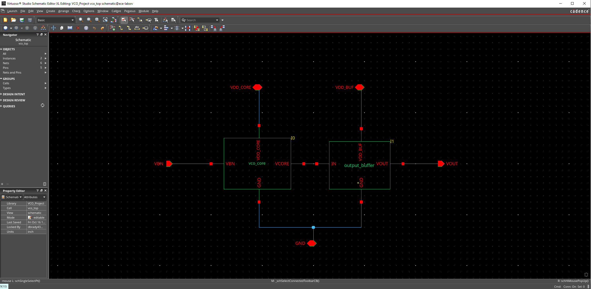
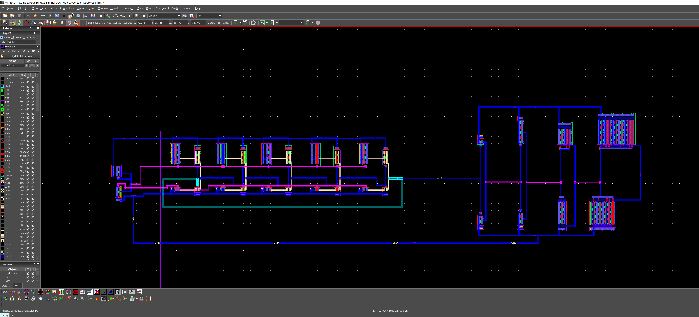
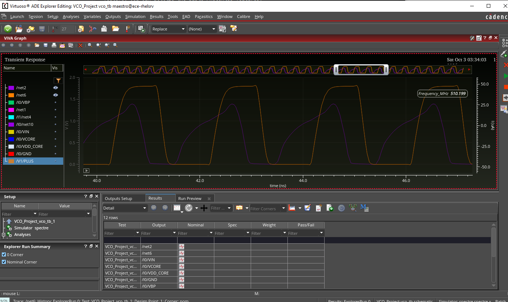
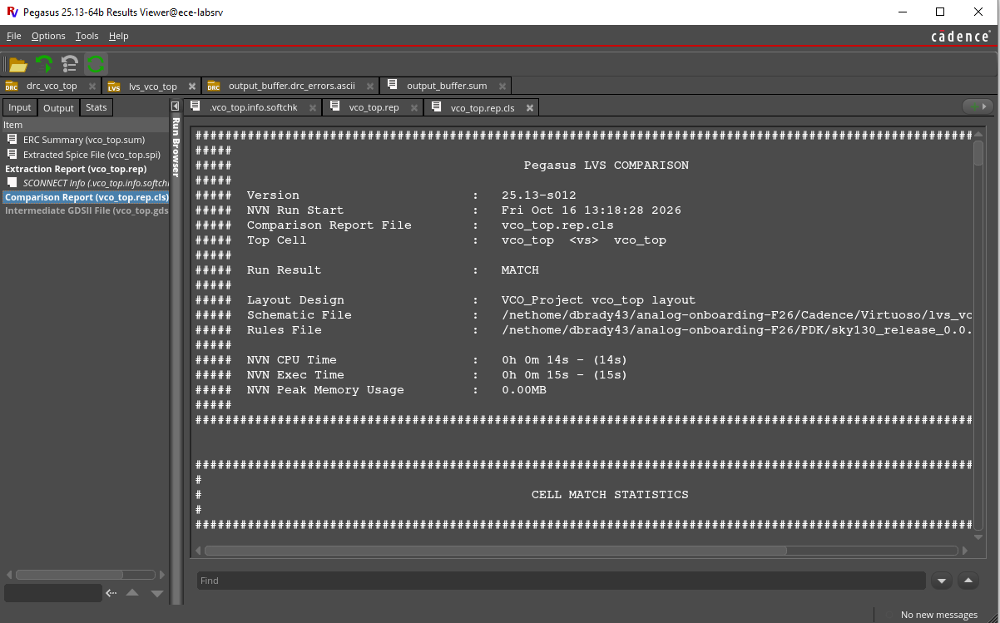

Project Overview
For my ECE 1100 Discovery Project, I designed a five-stage current-starved CMOS ring oscillator using Cadence Virtuoso. I wanted to learn more about integrated circuit design and understand how a schematic becomes a physical layout. The design targeted a frequency of 500 MHz with a 1.8 V supply and a buffer driving a 1 pF output load.
A ring oscillator connects an odd number of inverters in a loop. Each inverter takes a small amount of time to change its output. As the signal travels around the loop, the circuit keeps switching. In a current-starved design, extra transistors limit the current available to each stage. Changing the control voltage changes that current and adjusts the frequency.

What I Did
I started with hand calculations to estimate the delay needed at each stage. For a 500 MHz target and five stages, the average delay was about 200 picoseconds per stage. I then estimated the capacitance and used the process design kit parameters to choose starting transistor sizes.
One detail I had to account for was the load on the last stage. That stage drives both the next inverter in the loop and the input of the output buffer. The buffer then drives the external load. Keeping track of those connections helped me understand why the stages could behave differently even though they were part of the same ring.
After the calculations, I built and simulated the schematic in Cadence. I looked at the waveform and considered how the transistor sizes, current, and loading affected the circuit. I then completed the physical layout and checked it using DRC and LVS.

Results and What I Learned
The nominal simulation ran at about 510 MHz at 27 °C, close to my 500 MHz target. Frequency changed substantially across temperature and process corners, so meeting the target at one condition was only part of the problem. The top-level LVS result was MATCH. The DRC report still listed four metal-density flags. These checks helped me see what was working and what still needed attention.


This was a useful introduction to the amount of checking involved in circuit design. Getting through the calculations was only one part of the project. I also had to think about how the circuit would be connected and laid out.
I also got practice explaining my design choices. Being able to say why I chose a certain size or what a check tells me is something I want to keep improving, especially as I explore consulting.
Next, I would work on reducing frequency changes over temperature and process corners. I would also compare the schematic simulation with a simulation that includes the layout's parasitic effects. That would help me explain the tradeoffs and decide what to improve.